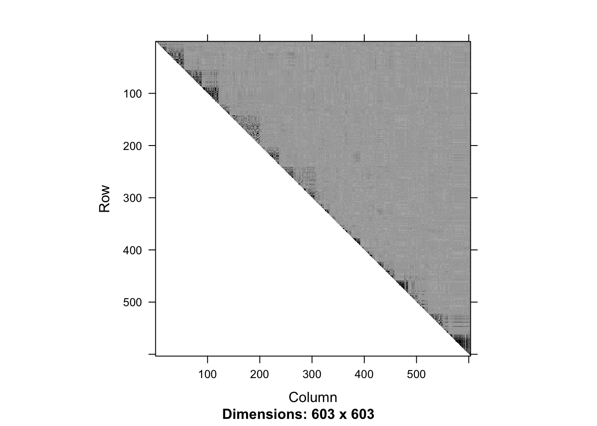
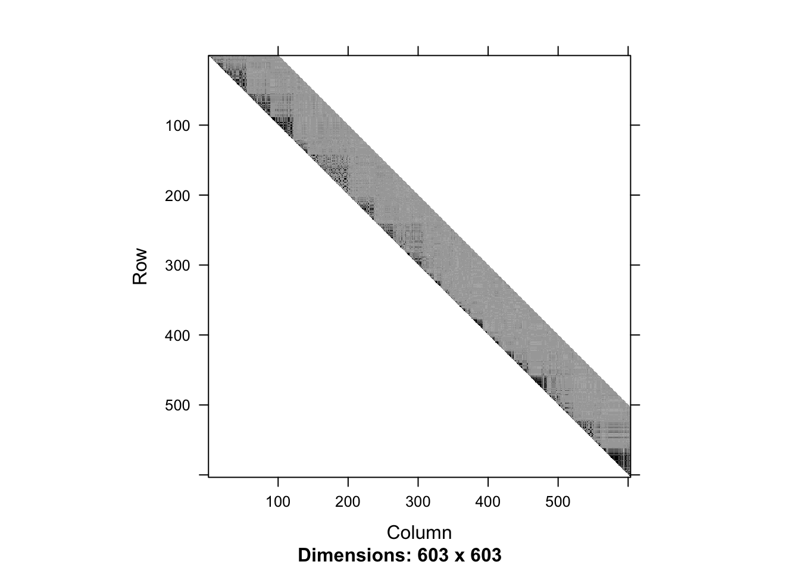
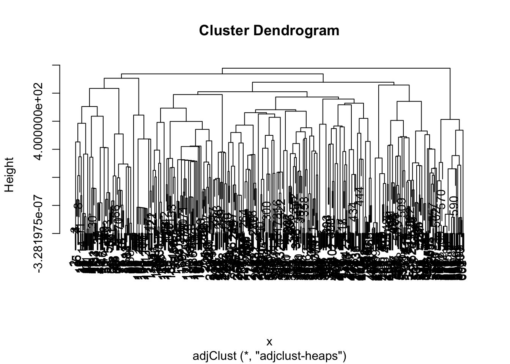

In this vignette we demonstrate the use of snpClust function in the adjclust package. snpClust performs adjacency-constrained hierarchical clustering of single nucleotide polymorphisms (SNPs), where the similarity between SNPs is defined by linkage disequilibrium (LD).
This function implements the algorithm described in the third chapter of [2]. It is an extension of the algorithm described in [3]. Denoting by \(p\) the number of SNPs to cluster and assuming that the similarity between SNPs whose indices are more distant than \(h\), its time complexity is \(O(p (\log(p) + h))\), and its space complexity is \(O(hp)\).
library("adjclust")The begining of this vignette closely follows the “LD vignette” of the SnpStats package [1]. First, we load genotype data.
library("matrixStats")
library("snpStats")
data("ld.example", package="snpStats")We focus on the ceph.1mb data. These data are drawn from the International HapMap Project and concern 603 SNPs over a 1Mb region of chromosome 22 in sample of 90 Europeans.
ceph.1mb## A SnpMatrix with 90 rows and 603 columns
## Row names: NA06985 ... NA12892
## Col names: rs5993821 ... rs5747302We can compute and display the LD between these SNPs.
ld.ceph <- ld(ceph.1mb, stats="R.squared", depth=p-1)
image(ld.ceph, lwd=0)
The above figure suggests that the LD signal is concentrated close to the diagonal. Therefore, we focus on a diagonal band:
h <- 100
ld.ceph <- ld(ceph.1mb, stats="R.squared", depth=h)
image(ld.ceph, lwd=0)
In this unrealistically small example with only 90 subjects, it turns out that one of the LD estimates is NA due to the lack of genetic diversity in the sample:
any(is.na(ld.ceph))## [1] TRUEwhich(is.na(ld.ceph), arr.ind = TRUE)## row col
## rs5748919 286 316As a quick fix for this vignette, we modify one of the observed genotypes as follows, and recalculate the LD:
ceph.1mb[4, 286]@.Data[1,1] <- as.raw(3)
ld.ceph <- ld(ceph.1mb, stats="R.squared", depth=h)Due to numerical errors in the LD estimation, some of the estimated values are slightly larger than 1, so we round the estimates to 1e-10:
max(ld.ceph-1)## [1] 1.332268e-15ld.ceph <- round(ld.ceph, digits=10)class(ld.ceph)## [1] "dgCMatrix"
## attr(,"package")
## [1] "Matrix"fit1 <- snpClust(ld.ceph, h)class(ceph.1mb)## [1] "SnpMatrix"
## attr(,"package")
## [1] "snpStats"fit2 <- snpClust(ceph.1mb, h, "R.squared")ceph.1mb <- as(ceph.1mb, "matrix")
class(ceph.1mb)## [1] "matrix"fit3 <- snpClust(ceph.1mb, h, "R.squared")The output of the snpClust is of class “hclust”. In particular, it can be plotted as a dendrogram:
plot(fit1)
Moreover, the output contains an element named merge which describes the successive merges of the clustering, and an element gains which gives the improvement in the criterion optimized by the clustering at each successive merge.
head(cbind(fit1$merge, fit1$gains))## [,1] [,2] [,3]
## [1,] -1 -2 0
## [2,] -255 -256 0
## [3,] -506 -507 0
## [4,] -492 -493 0
## [5,] -489 -490 0
## [6,] -487 -488 0For equivalent input in different classes, we get equivalent results.In this example, fit1, fit2 and fit3 are equivalent.
all.equal(fit1$merge, fit2$merge)## [1] TRUEall.equal(fit1$gains, fit2$gains)## [1] TRUEall.equal(fit2$merge, fit3$merge)## [1] TRUEall.equal(fit2$gains, fit3$gains)## [1] TRUE[1] Clayton, D. (2015). snpStats: SnpMatrix and XSnpMatrix classes and methods. R package version 1.20.0
[2] Dehman A. (2015). Spatial clustering of linkage disequilibrium blocks for genome-wide association studies. Phd Thesis, Université Paris Saclay.
[3] Dehman, A. Ambroise, C. and Neuvial, P. (2015). Performance of a blockwise approach in variable selection using linkage disequilibrium information. BMC Bioinformatics 16:148.
sessionInfo()## R version 3.4.1 (2017-06-30)
## Platform: x86_64-apple-darwin15.6.0 (64-bit)
## Running under: OS X El Capitan 10.11.6
##
## Matrix products: default
## BLAS: /Library/Frameworks/R.framework/Versions/3.4/Resources/lib/libRblas.0.dylib
## LAPACK: /Library/Frameworks/R.framework/Versions/3.4/Resources/lib/libRlapack.dylib
##
## locale:
## [1] en_US.UTF-8/fr_FR.UTF-8/en_US.UTF-8/C/en_US.UTF-8/en_US.UTF-8
##
## attached base packages:
## [1] stats graphics grDevices utils datasets methods base
##
## other attached packages:
## [1] snpStats_1.26.0 Matrix_1.2-10 survival_2.41-3
## [4] matrixStats_0.52.2 adjclust_0.4.0
##
## loaded via a namespace (and not attached):
## [1] Rcpp_0.12.12 compiler_3.4.1
## [3] RColorBrewer_1.1-2 GenomeInfoDb_1.12.2
## [5] XVector_0.16.0 bitops_1.0-6
## [7] tools_3.4.1 zlibbioc_1.22.0
## [9] digest_0.6.12 evaluate_0.10.1
## [11] lattice_0.20-35 DelayedArray_0.2.7
## [13] yaml_2.1.14 parallel_3.4.1
## [15] GenomeInfoDbData_0.99.0 rtracklayer_1.36.4
## [17] stringr_1.2.0 knitr_1.16
## [19] Biostrings_2.44.2 S4Vectors_0.14.3
## [21] IRanges_2.10.2 HiTC_1.20.0
## [23] stats4_3.4.1 rprojroot_1.2
## [25] grid_3.4.1 Biobase_2.36.2
## [27] XML_3.98-1.9 BiocParallel_1.10.1
## [29] rmarkdown_1.6 magrittr_1.5
## [31] backports_1.1.0 Rsamtools_1.28.0
## [33] htmltools_0.3.6 BiocGenerics_0.22.0
## [35] GenomicRanges_1.28.4 GenomicAlignments_1.12.1
## [37] splines_3.4.1 SummarizedExperiment_1.6.3
## [39] stringi_1.1.5 RCurl_1.95-4.8